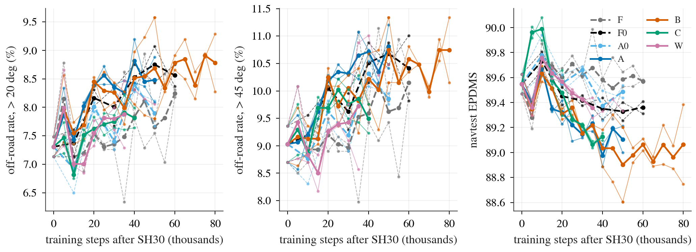

2026-10-11，实验线 VT，决策 248，接决策 145、160、204、245。数字全部来自 experiments/vis_train/results/reads.md，没有重算。区间都是 95% 区间，按日志整体重抽样，臂和对照同种子配对。W 的第二个种子还没训完，只读到 35k 步，最终行之后补。
此前所有方法里驾驶模型的视觉编码器都是冻结的。这条线问：真的在 navtrain 上训练视觉权重，测试集上「大弯出界」这个缺口会不会变小。
判据看三个失败率，单位是百分点（pp），正数是更差。出界率（off-road）：车开出了可行驶区域。转角大于 45 度的出界再分两类。切内侧（cut-inside）：车往弯内侧切过了路沿。转不过去（under-turn）：车转得不够。全榜分数、小于 5 度的直路、前车碰撞（NC）和其余子项只当护栏。分数类指标正数是更好。「区间含 0」意思是这个差分不开。
一个臂如果靠降低别的指标买到转弯收益，就不是候选（预登记补记 2）。航向角误差不当闸门（决策 245）。
剂量够了：视觉权重的相对位移是 1.7% 到 2.6%，远过 0.5% 的线；把支路内容换成别的场景的，分数掉 5.4 到 6.9。所以不能说「训得不够」。
| 臂 | 做法 | 对照 |
|---|---|---|
| F | 冻结，只是多训步数 | 无（同步数基线） |
| A0 | 冻结，但开了一条读原视觉特征的通道 | F |
| A | 视觉编码器的一份可训练副本，输出经通道进驾驶模型 | A0 |
| B / B2 | A 加预测未来 1 秒和 2 秒视觉特征的损失；B2 再训 30k 步 | A0、A |
| C | 原有编码器原地解冻，不加锚行（保住原能力的行）、不蒸馏其他头 | F0（同样去锚但视觉冻结） |
| W | A 的支路读前、左、右三个视角 | A（同步数），F |
| R | 支路冻结后从头训驾驶模型。闸门要求「遮掉支路掉分 ≥ 0.2」才跑；实测遮掉反而涨 0.75，闸门不过，没有跑 | — |
A、B、C 有两个种子，W 有两个（第二个未完），B2 两个。

「升」「降」指区间整体在 0 之上或之下，「没动」是区间含 0。对失败率，升就是更多失败。「救 N 弄坏 M」是 token 数：对照失败而本臂通过的有 N 个，反过来有 M 个，括号里是失败总数的变化。大于 45 度桶的数。
| 比较 | 升 | 降 | 没动 | 救 / 弄坏（大于 45 度） |
|---|---|---|---|---|
| A 对 A0（k50） | 中弯（20 到 45 度）的路径进度 +0.52 [+0.20, +0.85]；直路出界率 +0.17 [+0.05, +0.32] | 全榜 −0.38；直路 −0.51；前车碰撞 −0.20；碰撞时间 −0.28；舒适度 −0.74 | 大于 20 度出界 +0.59 [−0.25, +1.48]；大于 45 度切内侧 +1.09 [−0.08, +2.25]；转不过去 −0.59 [−1.19, +0.03]；navhard 全部 | 出界 救 101 弄坏 130（299 → 328）；切内侧 57 / 90（162 → 195）；转不过去 37 / 19（75 → 57） |
| B 对 A0（k50） | 直路车道保持 +0.16；中弯路径进度 +0.50；大于 20 度出界 +0.79 [+0.05, +1.55]（更差）；大于 20 度切内侧 +0.75（更差） | 全榜 −0.58；直路 −0.59；前车碰撞 −0.24；舒适度 −1.19；navhard 第一阶段（种子 1）−2.09 [−4.16, −0.15] | 大于 45 度出界 +0.89 [−0.49, +2.21]；切内侧 +0.86 [−0.26, +1.82]；转不过去 −0.40 [−0.93, +0.13] | 出界 99 / 126（299 → 326）；切内侧 62 / 88（162 → 188）；转不过去 32 / 20（75 → 63） |
| B 对 A（k50） | 分数项没有；中弯切内侧 +0.52（更差） | 全榜 −0.20 [−0.41, −0.00]；舒适度 −0.44 | 大于 45 度出界 −0.07 [−1.03, +0.84]；其余几乎全部 | 出界 83 / 81（328 → 326） |
| B2 对 A0（k80） | 路径进度各档（直路除外；全部 +0.30 [+0.12, +0.47]）；大于 20 度出界 +0.89 [+0.03, +1.77]（更差） | 全榜 −0.42；直路 −0.54；前车碰撞 −0.30；舒适度 −1.28；转不过去 −0.63 [−1.23, −0.12]（失败变少） | 大于 45 度出界 +0.89 [−0.62, +2.45]；切内侧 +1.02 [−0.07, +2.06] | 出界 107 / 134（299 → 326）；切内侧 61 / 92（162 → 193）；转不过去 40 / 21（75 → 56） |
| C 对 F0（k40） | 路径进度 +0.25；navhard 综合分两个种子 +3.17 [+0.09, +6.63]、+3.61 [+0.11, +7.18]；前车碰撞失败数 +0.32（更差） | 直路 −0.55 [−0.93, −0.17]；前车碰撞 −0.30 [−0.52, −0.09]；碰撞时间 −0.26；舒适度 −0.81 | 全榜 −0.22 [−0.59, +0.13]；大于 45 度出界 −1.02 [−2.24, +0.30]；切内侧 −1.09 [−2.22, +0.04]；转不过去 +0.30 [−0.36, +1.05]；HUGSIM 与 F0 无差 | 出界 136 / 105（319 → 288）；切内侧 101 / 68（208 → 175）；转不过去 22 / 31（49 → 58） |
| W 对 A（k35，未终） | 碰撞时间（大于 45 度）+0.53；转不过去全档 +0.13 [+0.04, +0.22]、中弯 +0.49（更差） | 路径进度 −0.09；大于 20 度切内侧 −0.82 [−1.50, −0.18]（失败变少） | 全榜 +0.12 [−0.12, +0.38]；大于 45 度出界 −0.92 [−2.33, +0.39]；切内侧 −1.05 [−2.27, +0.12]；转不过去 +0.13 [−0.48, +0.66]；navhard、HUGSIM 未读 | 出界 136 / 108（323 → 295）；切内侧 94 / 62（191 → 159）；转不过去 26 / 30（60 → 64） |
| W 对 F（未训练） | 中弯路径进度 +0.36；中弯转不过去 +0.52（更差） | 全榜 −0.32 [−0.58, −0.06]；直路 −0.34；舒适度 −1.18 | 出界、切内侧各档全部区间含 0 | — |
表里有一些读数区间含 0 却方向一致，比如 C 的大弯出界降 1.02 pp；这些只能算「没动」。每个比较读了很多个格子，没有差异时也有约 5% 的格子会越过 0。
A 对 A0 的全榜退步在 k10 是 −0.11，k20 −0.23，k30 −0.51；之后停在 −0.2 到 −0.5（k45 是 −0.18，区间含 0；k50 −0.38），并不是一路变大。B 对 A0 同样或略差。两个都不是候选。
测试时把支路遮掉，A 涨 0.75 分，大于 20 度出界降 1.65 pp，大于 45 度切内侧降 2.14 pp；B、B2 同方向（涨 0.84 和 0.76）。换成别的场景的内容则掉 5.45、5.66、6.94。所以模型读这条通道，读出来的东西让它切内侧。
另一方面，离线探针（一个小预测头读支路特征，看大弯出界）显示 B 的特征比冻结特征多带一点转弯信息：B −1.05 / −1.11 pp，区间不含 0；A −0.67，区间含 0；B2 −1.24 / −1.40；C −1.52 / −1.59。信息读出变好，驾驶模型用它时变差：与决策 245 是同一个形状，这是第二次看到。
预登记规定：A 的通道必须「遮掉后掉分 ≥ 0.2」才启动 R。实测 −0.75 [−1.09, −0.44]（两个种子 −0.61 和 −0.90），不过，R 没有跑，16 个任务取消。续训改选 B（大于 45 度出界对 A0：A +0.46 pp，B +0.16 pp）。B2 对 A0 全榜 −0.42 [−0.78, −0.08]；B2 对 B 全榜 +0.16 [−0.02, +0.34]：多训 30k 步，退步没有变大也没有变小。
C 在 k05 到 k10 看起来有收益（k10 全榜 +0.26，区间下界 −0.00），之后消失。k40：直路 −0.55，前车碰撞 −0.30，大弯出界和切内侧虽然方向是降，区间都含 0。navhard 综合分对 F0 两个种子都升，对 F 区间含 0（+2.18 [−0.67, +5.35]、+1.81 [−0.98, +4.94]）。HUGSIM 上 C 与 F0 没有差，但 F 和 F0 自己对 SH30 就掉（F −0.052 [−0.101, −0.015]），说明续训本身就在这个榜上掉。因为直路和前车碰撞退步，C 不是候选。
同步数下 W 对 A 在 k15 到 k30 切内侧更少（k30 −1.65 [−2.80, −0.68]；k25 的区间含 0）。收益集中在内侧路沿落在常规视场外的帧（k35：−1.44 [−2.81, −0.21]；视场内 +0.67，区间含 0），正是 A 对 A0 输的地方（视场外 +1.53 [+0.29, +2.90]）。把侧视图遮掉，W 种子 0 掉 0.54，大于 20 度出界涨 1.46 pp，说明侧视图被读。
但它换进了转不过去（k30 +0.76 [+0.27, +1.19]）；种子 0 的优势在末尾 k50 没了（切内侧 +0.00 [−1.28, +1.45]），种子 1 在 k35 是 −2.50 [−3.95, −1.16]；W 对未训练的 F 不更好（全榜 −0.32）。单个快照的摆动在 1 到 2 pp，所以这是一个要在联合训练里重测的方向，不是结果。
「本车道前方静止或慢车」这一类（决策 196）：没有任何臂对其对照改善。前车碰撞失败数：A0 161.5，A 183，B 190，C 199，W 166（k35），B2 197.5。
噪声底：冻结的 F 只是多训步数，对 SH30 的全榜分数在各快照之间在 −0.27 到 +0.19 之间摆；大于 45 度切内侧在 −0.16 到 +1.45 pp 之间摆。几个 0.1 分的差在噪声里；切内侧 1 pp 左右的差也在冻结对照自己的漂移范围内。
| 比较 | 量 | 判词 | 护栏 |
|---|---|---|---|
| A 对 A0（k50） | 大于 20 度出界 +0.59 [−0.25, +1.48] | not measured | fail |
| B 对 A0（k50） | +0.79 [+0.05, +1.55] | undetermined | fail |
| C 对 F0（k40） | −0.71 [−1.62, +0.18] | undetermined | fail |
| B2 对 A0（k80） | +0.89 [+0.03, +1.77] | undetermined | fail |
| W 对 A（切内侧，k35 未终） | 均值 −1.05 [−2.27, +0.12]；种子 0（k50）+0.00 [−1.28, +1.45]；种子 1（k35）−2.50 [−3.95, −1.16] | 均值与种子 0 undetermined；种子 1 seeing the curb helps | pass |
A 的「not measured」是规则按字面算出来的：规则里「遮掉通道掉分 < 0.2」被「遮掉反而涨 0.75」触发。这不表示训得不够，上面已经说明剂量到了、通道被读了。
pp_train.py、vt.py）没有经协调者逐行复核；续训重启了优化器；W 在相同步数上比较。侧视图和任何表征改动，应该放进一次联合的驾驶模型训练里重测：1 万步、两个种子、逐项去掉，用「救 N 弄坏 M」的翻转数来读。
图与文件：experiments/vis_train/results/trend.png（本页 figs/trend.png 为其副本）、experiments/vis_train/results/reads.md、决策 research/decisions/248.md、预登记 experiments/vis_train/plans/2026-10-10-vis-train-prereg.md。